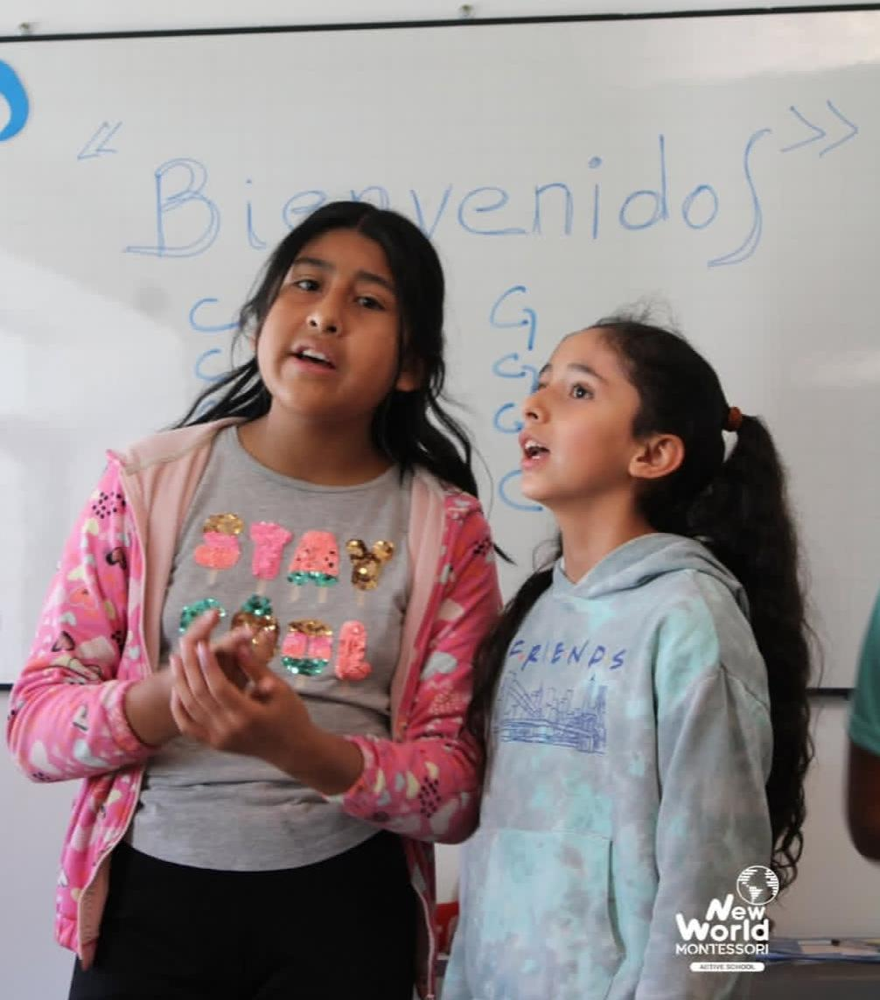
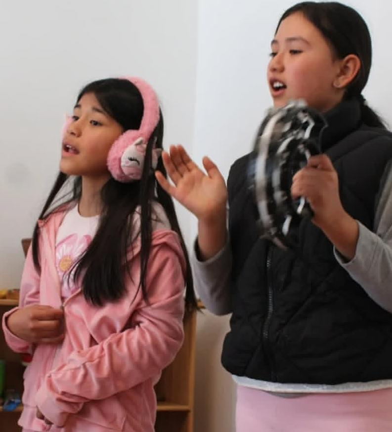
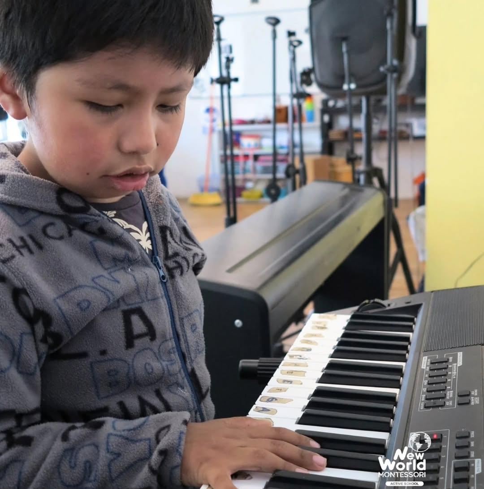

TALLER 1A
Aprendemos a calentar la voz con ejercicios seguros, postura adecuada y respiración consciente para preparar el cuerpo antes de cantar.

Técnica vocal, respiración, entonación y expresión musical.
Aprendemos a calentar la voz con ejercicios seguros, postura adecuada y respiración consciente para preparar el cuerpo antes de cantar.
Se fortalecen la afinación vocal y la entonación con prácticas guiadas para reconocer notas, intervalos y cambios de altura.
Trabajamos ejercicios de respiración, apoyo diafragmático y control del aire para sostener frases musicales con mayor seguridad.
El karaoke y la interpretación grupal ayudan a mejorar oído, ritmo, memoria musical y confianza frente al público.
Los estudiantes interpretan canciones en distintos idiomas, aplicando técnica vocal, expresión, pronunciación y reconocimiento de notas.


